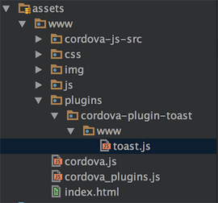
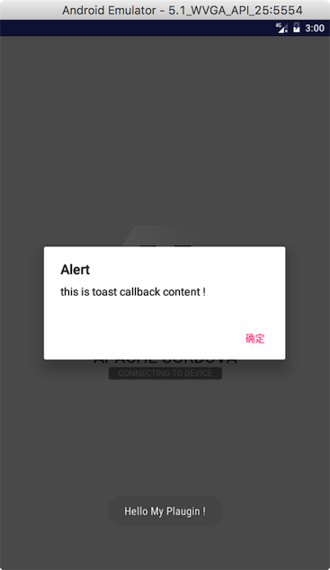

Cordova ： 自定义Plugin
2017年4月8日Cordova之自定义Plugin
本文通过自定义一个简单的Toast插件来介绍一下如何从0开始自定义自己的plugin，基于cordova6.2.1版本。在这之前你需要创建一个Cordova项目，如何创建一个Corodva项目可以参考Cordova：Plugin中的1-5步骤，这里不在赘述。
1.原生插件开发
首先创建一个ToastPlugin，我把他放在了主工程中，所有自定义的Plugin都是继承自CordovaPlugin，然后重写CordovaPlugin的execute方法来实现插件的功能，CordovaPlugin中定义了三个execute，这里我选择重写方法public boolean execute(String action, JSONArray args, CallbackContext callbackContext)，至于重写哪个好，全凭自己喜欢。下面看下ToastPlugin的代码：
|
|
上面就是一个简单的插件，execute是入口，接收H5发送过来的请求，根据具体的action来执行不同的逻辑，并根据结果来通过callbackContext发送回调结果。
参数理解：
action： 应该很好理解的，比如我们现在写的是一个对话框插件，可能就会有按钮操作，那么需要定义三个action:alert, cancel, confirm。根据不同的action执行不同的逻辑。
args： 参数，是一个数组的形式，H5在调用的时候会把参数封装成一个json数组格式的字符串。
callbackContext： 原生插件通过这个参数来给H5发送反馈，当然这个不是必须的，根据需要来写。发送的数据类型为PluginResult,状态PluginResult.Status.OK表示成功，状态’PluginResult.Status.ERROR’表示失败，当然还是有其他类型的状态，可以查看luginResult.Status的具体定义。
2.注册原生插件
第1步中创建了一个原生插件，下一步就是注册插件，只有注册了插件，在Cordova初始化的时候才能根据注册信息来获取该插件并实例化，后面调用的时候才能找得到它。配置的地方就是res目录下的xml目录下的config.xml文件。在其中加一个节点：
一个feature代表一个原生插件，属性name是这个原生插件的名字，param的android-package用来指定这个插件的具体实现类。
OK，配置完毕，这样原生部分的工作已经完成了。下面看js方面的工作。
3.js插件开发
首先在assets目录下的plugins目录下创建一个目录，作为新js插件的目录，目录名cordova-plugin-toast，然后在此目录下创建新的目录，目录名www，最后在www目录下创建我们的js插件toast.js，看图：

接下来是具体的实现：
代码中define的第一个参数”cordova-plugin-toast.toast”是这个plugin的id，在后面会用到。
插件的实现部分在module.exports部分，这里面定义了一个函数名字叫toast，有两个参数分别是要展示的内容以及回调，通过exec执行，将内容以及回调传递给原生插件，也就是步骤1中我们写的原生插件。
exec说明：
exec就是函数function androidExec(success, fail, service, action, args)，具体实现可以看exec.js，在assets/www/corodva-js-src目下，接收的五个参数具体说一下。
- success是成功回调，对应步骤1中PluginResult的Status.OK
- fail是失败回调，对应PluginResult的Status.ERROR
- service就是我们原生插件名称，也就是步骤2中注册原生插件中
feature节点的name属性定义的名字。 - action就是我们原生插件实现是定义的一系列action，步骤一中也有说明，原生插件接到请求根据service找到插件，然后再根据action执行具体的逻辑。
- args就是参数，json数组格式，步骤一中也有说明
好了，js插件开发完毕，下一步跟原生一样，注册插件。
3.注册js插件
找到此文件assets/www/cordova_plugins.js，我们的js插件需要在这里进行注册了才能被访问，因为cordova.js在加载的时候会从这里面读取信息。
这里的module.exports是一个Json数组，每一项代表一个插件，说一下插件配置每一项的意思：
id： 就是定义js插件define的第一个参数，在步骤3中已经说明。
file： 很好理解，就是我们js插件所在的路径
pluginId： 插件的pluginId，下面在设置版本信息的时候会用到，其他地方有没有用到，暂时没遇到
clobbers： 这个类似于实例，我们在后面用到js插件的时候就是通过这名称来调用插件里面的函数的，是个数组，可以定义成多个名字。还有另外一种方式，就是使用merges定义，代表允许不同的js插件可以取一个相同的实例名称，例如cordova官方的一个demo如下。
OK ，js插件已经注册完毕，下面就是使用了吧。
4.调用js插件
这里用一个比较简单的例子，就是在设备准备好的时候执行这个js。我们在assets/www/js目录下新建一个ready.js文件，然后编码
嗯，就是监听deviceready事件，然后进行响应，捕获到此事件后进行toast，并接收回调。
5.加载js文件
插件的开发以及调用都已经开发完毕，最后一步就是执行了吧。这里使用assets/www/index.html，app启动时默认加载这个html，我们就再这里调用4中的ready.js文件。在原先的html中加入js引用<script type="text/javascript" src="js/ready.js"></script>。
万事俱备，只差运行了吧。
6.运行
看效果图，下面是toast的内容，上面的对话框里的内容就是我们原生插件设置callback时 的内容。

一个简单的插件完成了，算是入门了，剩下的就要靠自己了。